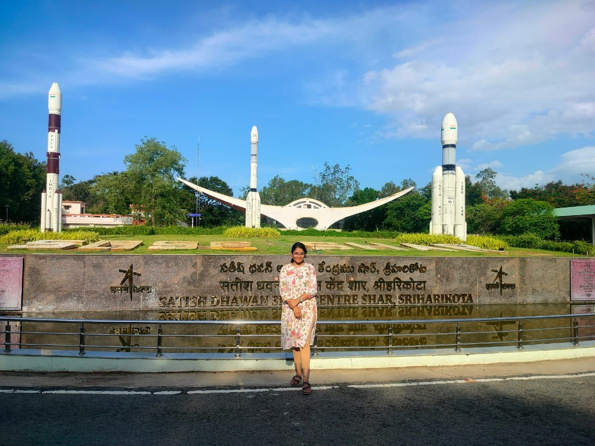
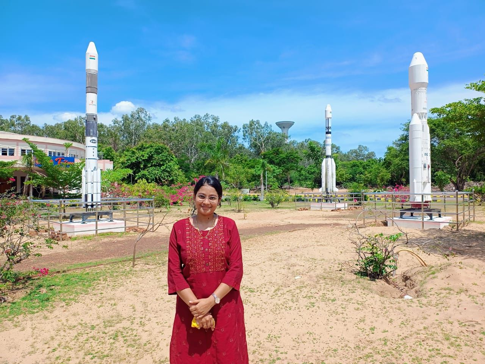
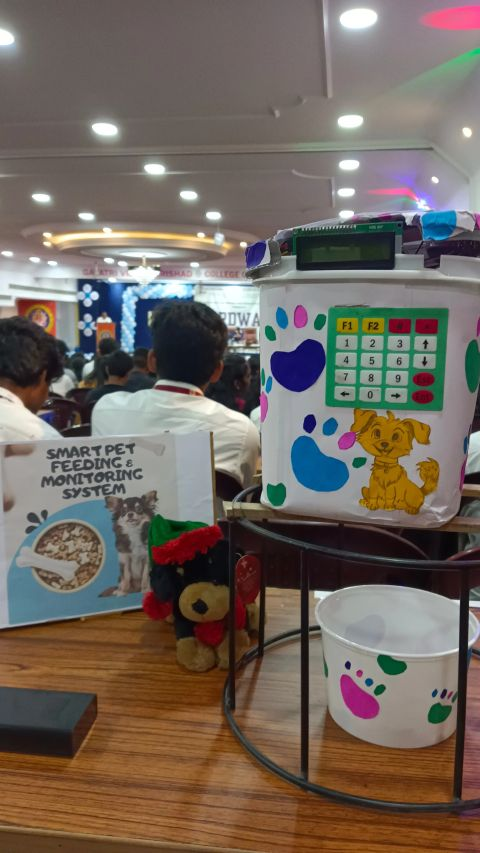
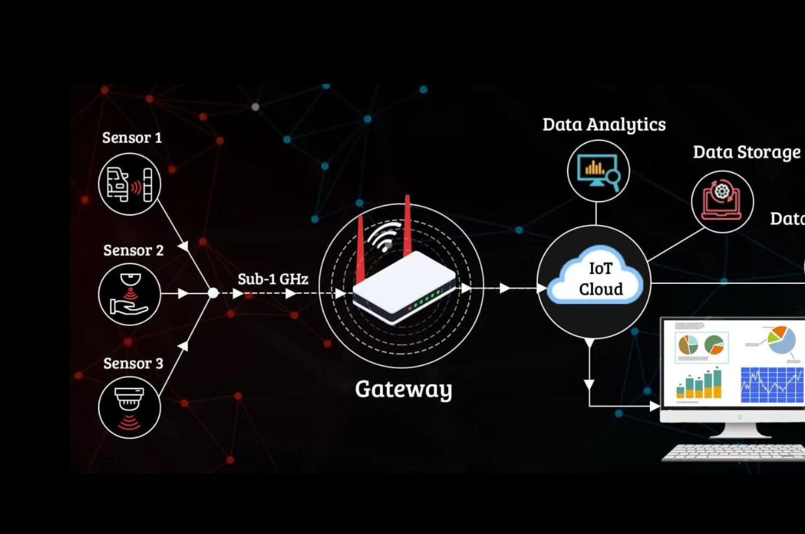

Jyothsna Vanapalli
I'm Jyothsna, an Electronics and Communication Engineering graduate with a strong interest in computer networking and communication technologies. With hands-on experience at ISRO and a passion for learning, I enjoy exploring new technologies, solving problems and turning ideas into reality. Always curious, always growing, and excited for what's next!
Drag your mouse or finger across the page and see what trails behind. Then open the stages below.
- Studying
- B.Tech, Electronics and Communication
- At
- Gayatri Vidya Parishad College of Engineering
- CGPA
- 9.3
- Internship
- ISRO, 2025
Stage 1Who is she?The two-minute version
What I study
Core Electronics and Communication subjects, from digital design in Verilog and SystemVerilog to 8086 assembly, with a 9.39 CGPA through the degree so far.
What I’m good at
Analytical, step-by-step problem solving. At ISRO I built a Python tool that calibrates and filters sensor data, and I’ve built an IoT pet feeder on Arduino and ESP32-CAM.
What I’m looking for
An entry-level role where I can apply technical fundamentals and grow into a data-driven professional.
Stage 2Where did she learn it?Three schools, three strong results
B.Tech in Electronics and Communication Engineering
CGPA 9.3.
Intermediate
93.3%.
Secondary school (SSC)
CGPA 10.
Stage 3What can she actually do?From Verilog to Canva
Programming
- C
- Python
- Java
Hardware design languages
- Verilog
- SystemVerilog
- 8086 Assembly
Engineering tools
- Cadence
- Xilinx ISE
- MATLAB
- Ansys
- Cisco Packet Tracer
- e-Sim
Software tools
- Visual Studio Code
- Eclipse
- Python IDE
Reporting and collaboration
- MS PowerPoint
- MS Word
- Canva
Working style
- Problem solving
- Structured communication
- Adaptability and continuous learning
- Analytical and logical thinking
- Team collaboration
Stage 4What happened at ISRO?Two months and a pile of sensor data
-
Intern, Data Processing and Web Application Development
Built a Python tool that turns raw sensor readings into calibrated, cleaned data, with a web interface on top.
- Wrote Python software to convert sensor voltage into pressure.
- Merged .txt data files and applied first and fourth order calibration to improve accuracy and reduce errors.
- Added a Butterworth low-pass filter to cut noise in the sensor data.
- Designed the web interface in HTML and CSS and built a Flask backend for file handling and workflows.
- Made the whole process automated from a single interface, so it’s easier to use.

Exploring India's launch vehicle heritage 🚀

A memorable experience at SDSC SHAR
Stage 5What has she built?It involves a hungry pet
-
Smart Pet Feeding and Monitoring System
A low-cost IoT solution that combines hardware control with live video.
- Dispenses food at scheduled intervals using an Arduino Uno and a servo motor.
- Uses RTC-based timing, a keypad matrix and an LCD so feeding times can be set by the user.
- Streams real-time video of the pet with an ESP32-CAM module.

Smart Pet Feeding and Monitoring System 🐾
Stage 6 Gateway Design through Edge Computing Final Year Project · TRAPS
-
Gateway Design through Edge Computing using TRAPS
Modified gateway behaviour to improve network traffic management and reduce congestion in an IoT-based Wireless Sensor Network. Explored routing protocols and priority-based task scheduling to ensure that emergency sensor data reaches the cloud before non-critical data.
Technologies: NetSim, IoT, WSN, Edge Computing, AODV, RPL.

WSN communication architecture.
Stage 6What else is she up to?Essays, clubs and social media
- Winner, creative and essay writing, Literary Day at GVPCE
- Social media handler, Hearts of Humanity Club
- Marketing and promotions member, IETE student forum club
Mission complete. Say hello.
Email me for opportunities, references or my full résumé.